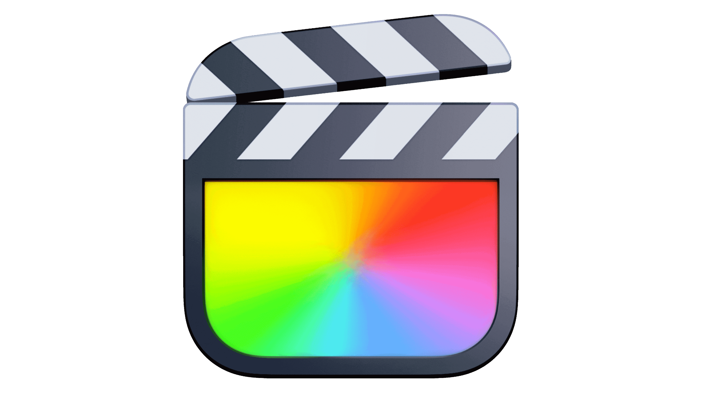
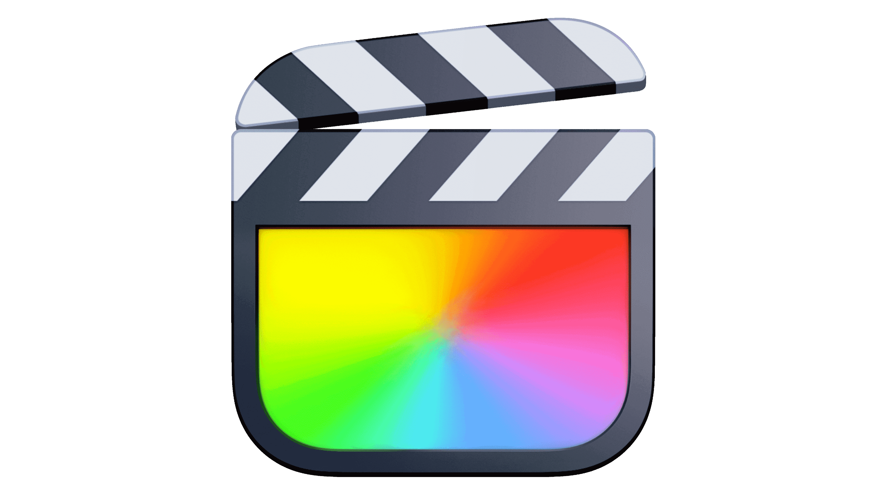
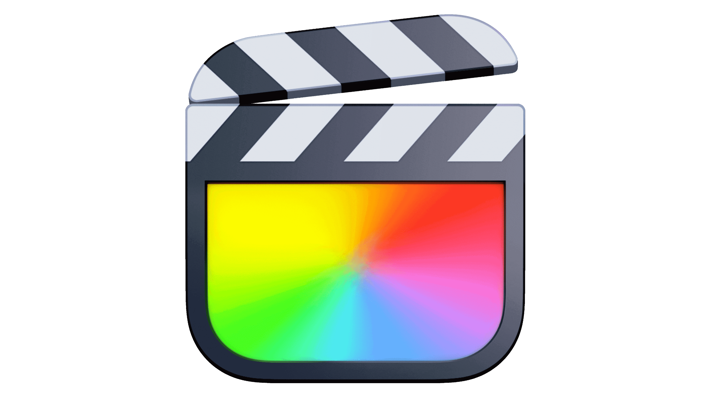

Works strictly over


 

The universal skin tone analyzer for macOS. Get objective, real-time vectorscope data over Lightroom, Premiere, or any app on your screen.
Native Apple Silicon Support

Your eyes adapt to color casts in seconds. What looks "natural" after 10 minutes of editing might actually be totally green or magenta. Monitors drift, and lighting conditions change. Subjective grading is risky.
Data doesn't lie. SkinColorAid gives you a floating vectorscope that reads pixels directly from your screen. It provides an absolute reference for skin tones, ensuring consistency across every shot in your timeline.
Activate the overlay with a global shortcut. Hover over any face in your video or photo. The indicator moves in real-time.


Adjust your tint and temp sliders. Watch the indicator snap to the Skin Tone Line.
No complex graphs—just a simple "Target Lock" for your colors.